Cheap eats in Yau Tsim Mong 油尖旺區
29 places, from $30. Tap one for prices, hours and the nearest MTR.
 Kai Kai Dessert佳佳甜品 · Jordan$32
Kai Kai Dessert佳佳甜品 · Jordan$32  Kam Wah Cafe金華冰廳 · Mong Kok$38
Kam Wah Cafe金華冰廳 · Mong Kok$38  Mui Kee Congee妹記生滾粥品 · Mong Kok~$45
Mui Kee Congee妹記生滾粥品 · Mong Kok~$45 Australia Dairy Company澳洲牛奶公司 · Jordan$42
Australia Dairy Company澳洲牛奶公司 · Jordan$42 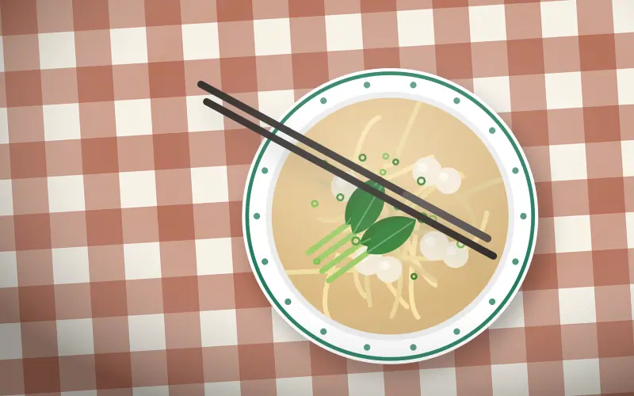
Mak Man Kee麥文記麵家 · Jordan$64 One Dim Sum一點心 · Mong Kok$72
One Dim Sum一點心 · Mong Kok$72 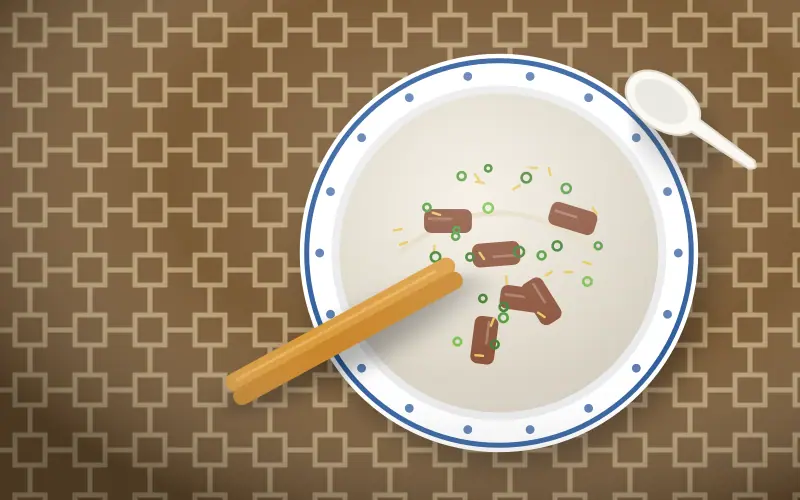
Nathan Congee and Noodle彌敦粥麵家 · Yau Ma Tei$82 Mammy Pancake媽咪雞蛋仔 · Tsim Sha Tsui$30
Mammy Pancake媽咪雞蛋仔 · Tsim Sha Tsui$30  Four Seasons Claypot Rice四季煲仔飯 · Yau Ma Tei$98
Four Seasons Claypot Rice四季煲仔飯 · Yau Ma Tei$98 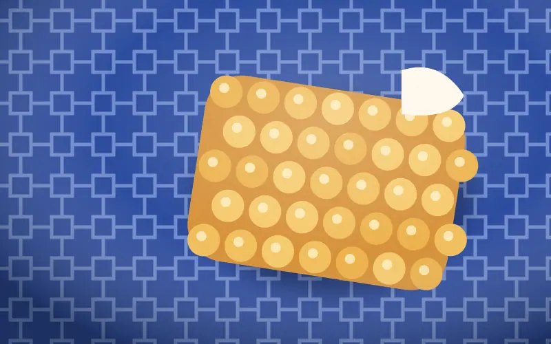
Fei Jie肥姐小食店 · Mong Kok~$30 Cheung Hing Kee Shanghai Pan-fried Buns祥興記上海生煎包 · Tsim Sha Tsui~$32
Cheung Hing Kee Shanghai Pan-fried Buns祥興記上海生煎包 · Tsim Sha Tsui~$32 Ichiran (Tsim Sha Tsui)一蘭（尖沙咀） · Tsim Sha Tsui~$123
Ichiran (Tsim Sha Tsui)一蘭（尖沙咀） · Tsim Sha Tsui~$123 Yee Shun Milk Company (Jordan)義順牛奶公司（佐敦） · Jordan$46
Yee Shun Milk Company (Jordan)義順牛奶公司（佐敦） · Jordan$46 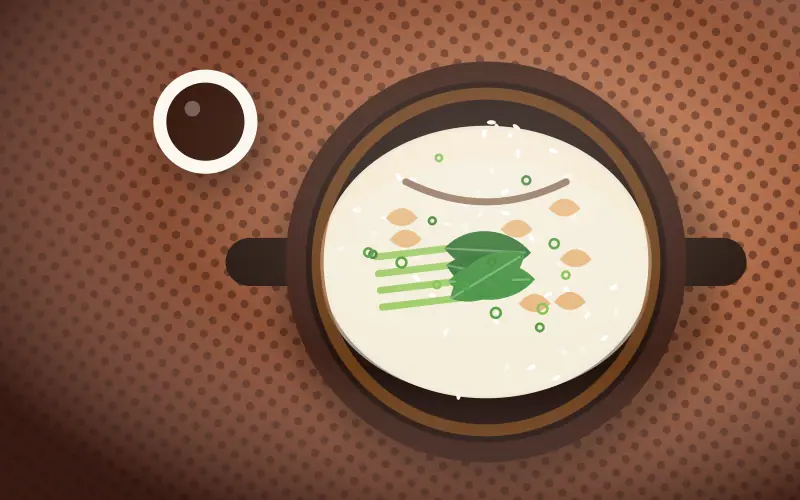
Hing Kee Restaurant興記菜館 · Yau Ma Tei$108 Delhi Club德里俱樂部 · Tsim Sha Tsui$88
Delhi Club德里俱樂部 · Tsim Sha Tsui$88 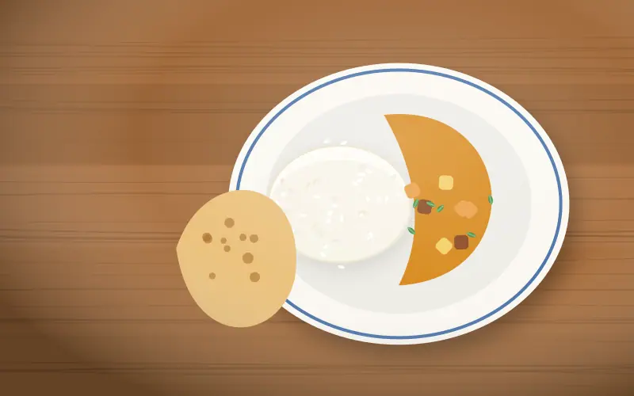
Khyber Pass Mess Club開巴印度餐廳 · Tsim Sha Tsui~$85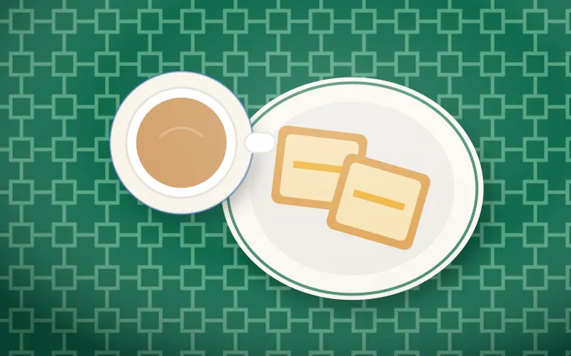
Mido Cafe美都餐室 · Yau Ma Tei$72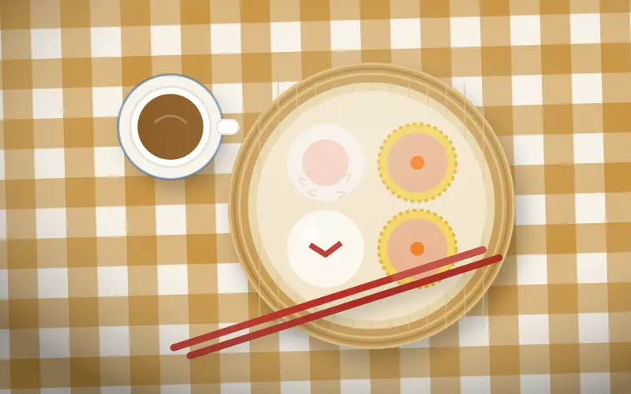
Dim Dim Sum點點心 · Mong Kok$58 Hokkaido Dairy Farm Milk Restaurant北海道牧場餐廳 · Mong Kok$42
Hokkaido Dairy Farm Milk Restaurant北海道牧場餐廳 · Mong Kok$42  Sweet Dynasty糖朝 · Tsim Sha Tsui$62
Sweet Dynasty糖朝 · Tsim Sha Tsui$62 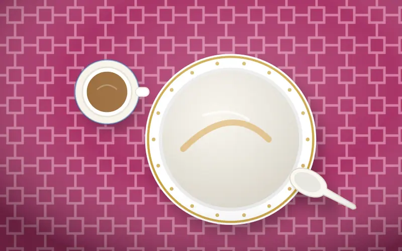
Honeymoon Dessert (Mong Kok)滿記甜品（旺角） · Mong Kok$58 Chee Kei (Tsim Sha Tsui)池記（尖沙咀） · Tsim Sha Tsui$72
Chee Kei (Tsim Sha Tsui)池記（尖沙咀） · Tsim Sha Tsui$72 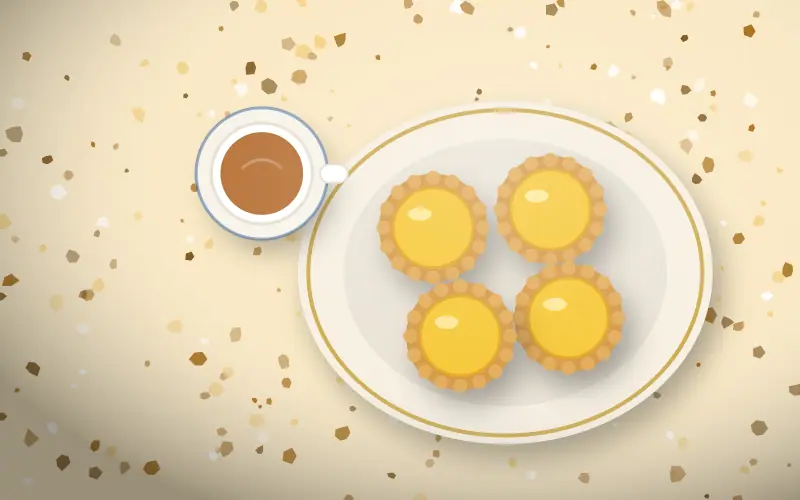
Kee Wah Bakery (Mong Kok)奇華餅家（旺角） · Mong Kok~$42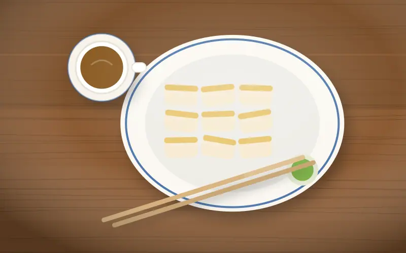
Chuen Cheung Kui (Mong Kok)泉章居（旺角） · Mong Kok$128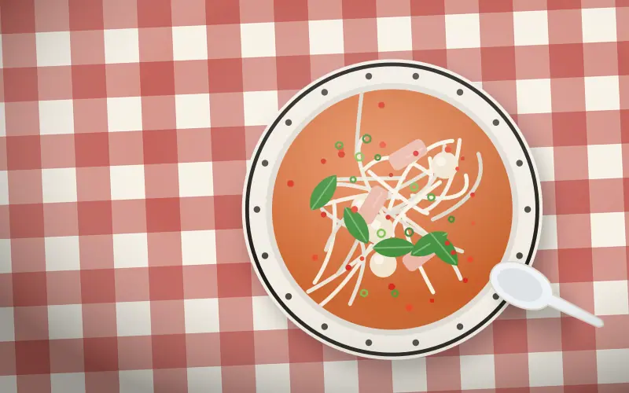
TamJai SamGor (Mong Kok)譚仔三哥米線（旺角） · Mong Kok$52 Lo Chiu Vietnamese (Jordan)老趙越南餐廳（佐敦） · Jordan$72
Lo Chiu Vietnamese (Jordan)老趙越南餐廳（佐敦） · Jordan$72 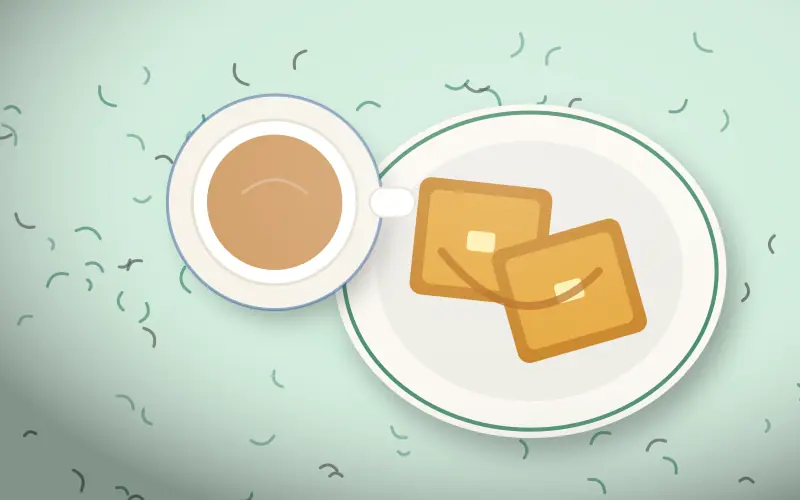
Tsui Wah (Prince Edward)翠華（太子） · Prince Edward$36 Sukiya (Mong Kok)すき家（旺角） · Mong Kok~$52
Sukiya (Mong Kok)すき家（旺角） · Mong Kok~$52 Ajisen Ramen (Tsim Sha Tsui)味千拉麵（尖沙咀） · Tsim Sha Tsui$78
Ajisen Ramen (Tsim Sha Tsui)味千拉麵（尖沙咀） · Tsim Sha Tsui$78